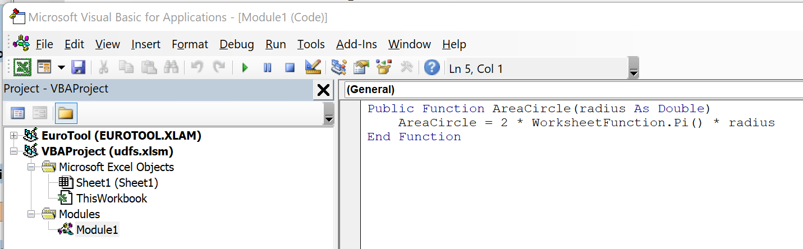
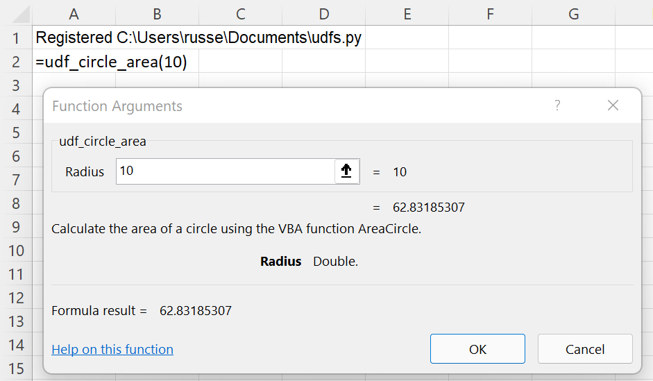
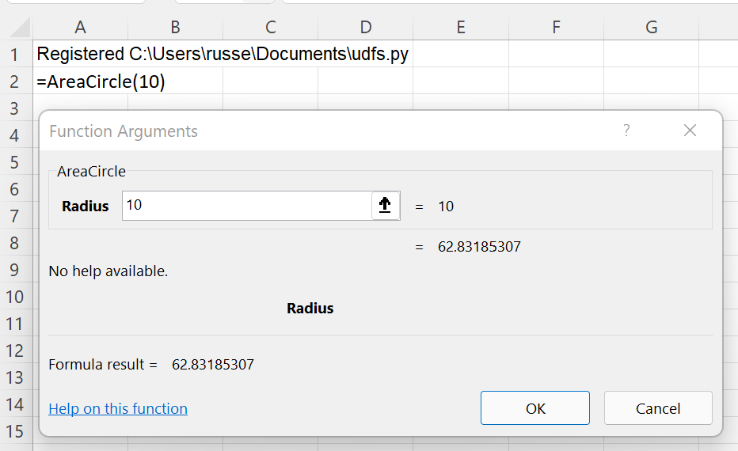
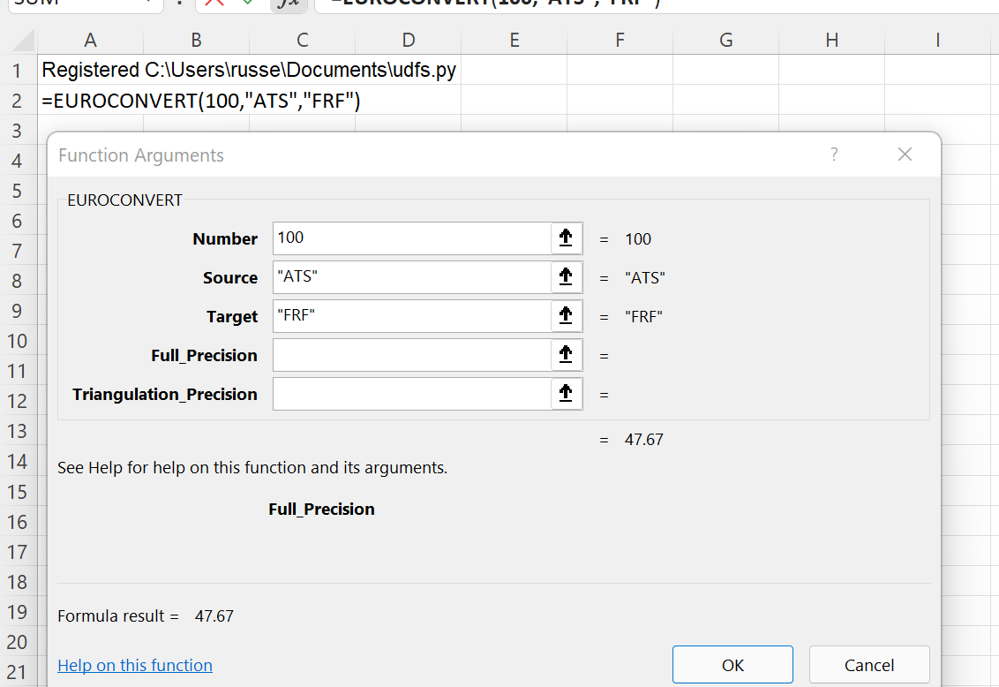
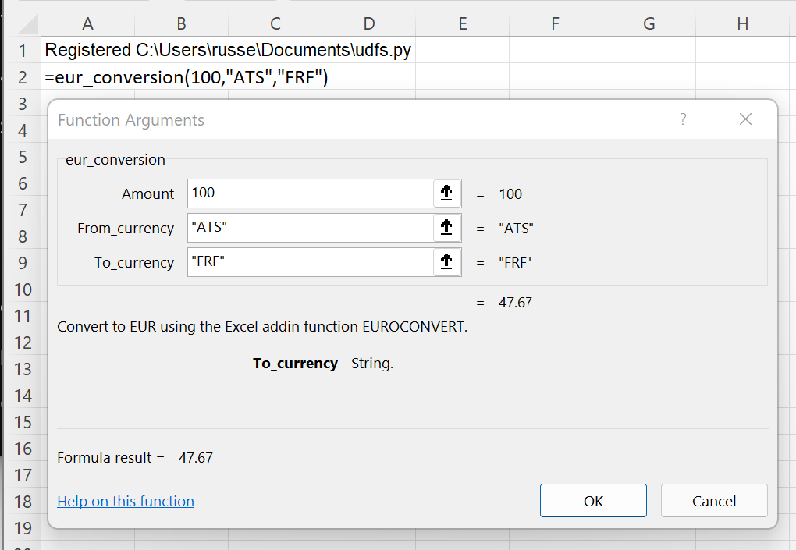

Calling VBA and other Excel add-in functions¶
xlSlim makes it easy to use functions from VBA or other Excel add-ins in your Python code.
Calling VBA functions¶
Add this little function to your Excel workbook:
Public Function AreaCircle(radius As Double)
AreaCircle = 2 * WorksheetFunction.Pi() * radius
End Function
The function must be defined in a VBA Module in the VBA editor (The VBA editor can be opened with Alt-F11 in Excel).
{kind=link}
This Python module accesses the VBA function. Note the global variable XLSLIM_UDF that is used to access VBA functions.
# This global is used to store a function pointer set by xlSlim
XLSLIM_UDFFUNC = None
def udf_circle_area(radius: float) -> float:
"""Calculate the area of a circle using the VBA function AreaCircle"""
return XLSLIM_UDFFUNC("AreaCircle", radius)
Note
All the Python code and Excel files shown are available from github in the xlslim-code-samples repo. I highly recommend downloading the samples from github. The Excel workbooks contain many tips and tricks.
Save the Python code as a new file on your PC. I saved the file in my Documents folder.
Enter this RegisterPyModule() formula in Excel (amending the location to match where you saved the file):
=RegisterPyModule("C:\Users\russe\Documents\udfs.py")
The function is now available to use in Excel.
{kind=link}
As you would expect, the result is exactly the same as calling the VBA function directly in Excel.
{kind=link}
The key is the global variable XLSLIM_UDF. Any function accessible to Excel can be called in Python using XLSLIM_UDF(<function name>, <arg 1>, <arg 2>…<arg n>)
Calling other Excel add-in functions¶
Excel is distributed with an add-in to convert between the pre-unification currencies of Euro member countries. Install this add-in by following the instructions at EUROCONVERT_function
Once the add-in is installed it can be used to convert 100 Austrian schillings to French francs.
{kind=link}
Add the eur_conversion() function below to the Python module. The module should now contain:
# This global is used to store a function pointer set by xlSlim
XLSLIM_UDFFUNC = None
def udf_circle_area(radius: float) -> float:
"""Calculate the area of a circle using the VBA function AreaCircle"""
return XLSLIM_UDFFUNC("AreaCircle", radius)
def eur_conversion(amount: float, from_currency: str, to_currency: str) -> float:
"""Convert to EUR using the Excel addin function EUROCONVERT."""
return XLSLIM_UDFFUNC("EUROCONVERT", amount, from_currency, to_currency)
Note
All the Python code and Excel files shown are available from github in the xlslim-code-samples repo. I highly recommend downloading the samples from github. The Excel workbooks contain many tips and tricks.
Reload the module in Excel (amending the location to match where you saved the file):
=RegisterPyModule("C:\Users\russe\Documents\udfs.py")
The function is now available to use in Excel.
{kind=link}
As you would expect, the result is exactly the same as calling the add-in function directly in Excel.